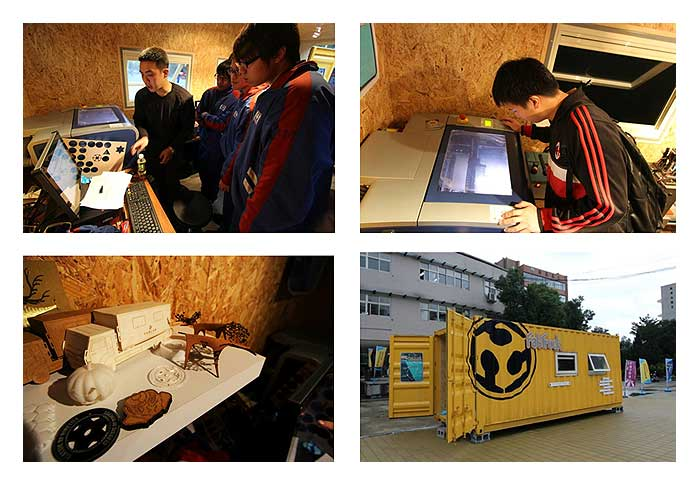

Welcome to Maker Space of Joe
Hello,I'Joe.I come from Beijing to participate in the training of FabLab in Shanghai.First,I have to thank my teacher,Saverio Silli.He teach me how to use the equipments,such as laser cutting machine,high precision 3D printing,3D scanning instrument,CNC digital machine tools,etc,and the method of thinking in the Fablab Shanghai.The Fablab is an open shared space,it's open to people in the society to share ideas to people around the world.So I will show you what I have learn in the exercises of title column.As long as you have originality and dream,the Fablab will give you a stage to show your creative.
Learning Skills
In this part,you can learn how to design and make a product,but also learn programming to control your products.It's a infinite space where you should be here.
Share Products
In this part,you can learn more about how to make a products.The tutorials include the source files of design,Parts list,schematic diagram and costs.
Space Carnival
Laboratory is rich in daily activities.It has Open Day, training courses and large-scale carnival.You will grow up every day, and have a wonderful life.
Would you like to insert more information about Makers?
Please click here.